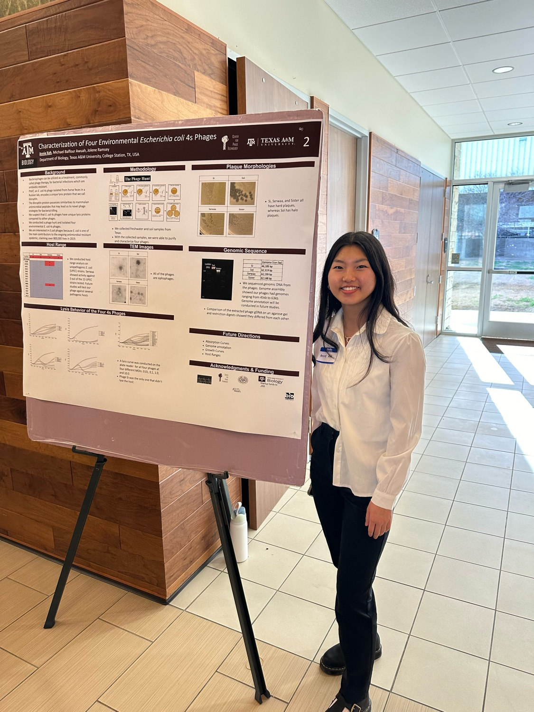
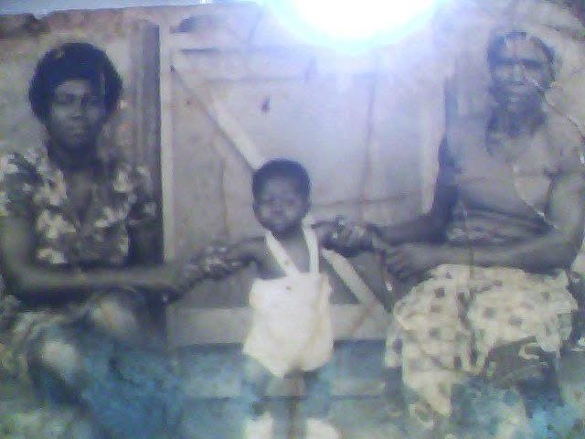
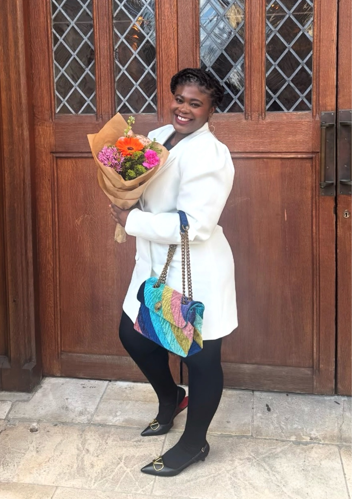
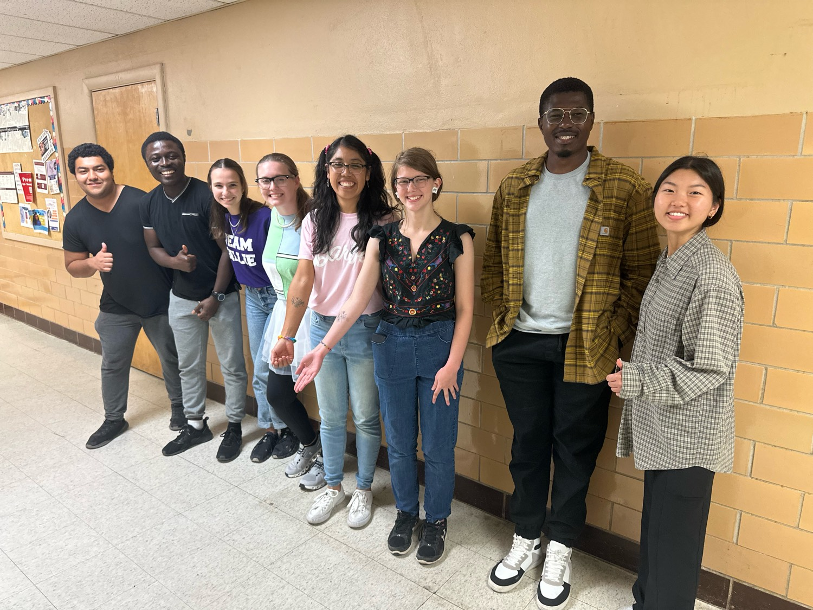

I am really excited to share this paper, which is my first ever publication!
It started as a training project during the first year of my PhD in 2022. At the time, I had no experience working with bacteriophages, and what better way to learn than by getting hands-on experience isolating novel phages from the environment? Over the course of that project, I collected environmental samples, isolated phages, purified them, amplified them, extracted their DNA, and prepared them for sequencing. I initially thought I had discovered seven novel phages, but after further work I realized that only three of them were truly unique.
One of those phages was Serwaa.
Much of the work on this phage was carried out together with my undergraduate researcher, Annie Koh. Annie is an incredibly hardworking and diligent young woman who I am confident will go on to become an amazing physician in the future. It was a privilege to mentor her and watch her develop as a scientist throughout this project. Together, we worked on isolating and characterizing the phage and generating the data that formed the foundation of this publication.

After we generated the phage and sequencing data, my lab mate, Michael Debrah, took the lead on genome annotation, manuscript preparation, and navigating the publication process, ultimately bringing the project across the finish line and getting it published. I am grateful for his efforts in helping transform the work into a published manuscript.
"This phage holds special meaning for me because of its name."
Serwaa is named after my grandmother, Kate, whose traditional Ghanaian name is Serwaa, as well as my cousin Sandra, who is also called Serwaa. Both have been tremendous sources of inspiration throughout my educational journey. They have always encouraged me, believed in me, and set wonderful examples through their hard work, resilience, and perseverance. Naming this phage after them felt like a fitting tribute.


I am also incredibly grateful to my mentor, Dr. Jolene Ramsey, for her guidance, encouragement, and unwavering support in helping move this project forward. I am thankful to the entire Ramsey Lab for creating an environment where I could learn, grow, and develop as a scientist.

A special thank you goes to our postdoctoral researcher, Dr. Guadalupe Valencia-Toxqui, who is an absolute rockstar and one of my scientific superheroes. She assisted me with cesium chloride gradient purification, which allowed us to obtain high-quality phage particles, and she was instrumental in helping acquire the TEM images used to characterize this phage. Beyond her technical expertise, she has been an incredible mentor and role model. I look up to her a lot, and I am excited to see all the wonderful things she will accomplish in the future. I have no doubt that she will go on to do amazing things, including one day running a successful lab of her own.
What makes this publication especially meaningful is that it represents the very beginning of my journey in phage biology. What started as a simple training project became my introduction to phage discovery, genomics, microscopy, and scientific research. It helped build the foundation for many of the projects I am working on today and played a major role in shaping me into the scientist I am becoming.
The story of Serwaa is not over yet. I am currently working on characterizing this phage alongside two other related phages, and Annie and I hope to have a full characterization paper completed by next year. There is still so much to learn from these fascinating viruses, and I am excited to see where this work leads.
"I hope this small piece of scientific work serves as a lasting tribute to my grandmother and honors the impact she has had on my life."
I am excited about the future of phage research and all the discoveries that lie ahead. Most of all, I hope this small piece of scientific work serves as a lasting tribute to my grandmother and honors the impact she has had on my life. In a small way, I hope this work helps immortalize her name and the values she instilled in those around her.
Thank you to everyone who helped make this possible. Here's to many more discoveries ahead.